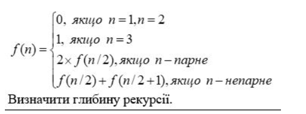
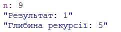
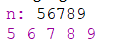

Мета: Сформувати декларативне мислення в галузі програмування завдяки використанню чистих функцій, рекурсій замість циклів, запобіганню даних, що змінюються. Опанувати застосування рекурсивних функцій для обчислювальних процесів.
Вибір середовища та мови функціонального програмування: У якості мови програмування було обрано мову Scheme тому, що це функціональна мова програмування, яка є одним із найпопуляріших діалеків Lisp. У якості IDE було обрано DrRacket
6.1. З n солдатів, вишикуваних в шеренгу, потрібно відібрати кількох в розвідку. Для здійснення цього виконується наступна операція: якщо солдат в шерензі більше ніж 3, то видаляються всі солдати, які стоять на парних позиціях, або всі солдати, які стоять на непарних позиціях. Ця процедура повторюється до тих пір, поки в шерензі залишиться 3 або менше солдатів. Їх і відсилають в розвідку. Обчислити кількість способів, якими можуть бути сформовані групи розвідників рівно з трьох осіб. Кількість солдатів n вводиться з клавіатури. Рекурентне співвідношення для обчислення кількості способів f(n), якими можна сформувати групи розвідників з n осіб в шерензі, таке:
Аналіз завдання
При виконанні даного завдання, необхідно було реалізувати функцію, яка реалізує рекуретне співвідношення. Для цього було використано конструкцію if, яка перевірє в якому діапазоні знаходиться надане число, та передає його у відповідну функцію, яка і повертає результат
Код програми
#lang racket
;умова завдання
; 0, if n=1 or n=2
; 1, if n=3
; 2*f(n/2), if n%2=0
; f(n/2)+f(n/2+1), if n%2=1
(define rec_num -1)
(define (func-sum n)
(set! rec_num (+ rec_num 1))
(if (> n 2) ; якщо до 2, то вивести 0
(if (> n 3)
( if (even? n)
(* (func-sum (floor(/ n 2))) 2) ; якщо більше трьох і парне число тоді 2*f(n/2)
(+ (func-sum (truncate(/ n 2))) (func-sum (+ (truncate(/ n 2)) 1)) )) ; якщо більше трьох і непарне число тоді f(n/2)+f(n/2+1)
1
)
0
)
)
;зчитування значання користувача
(display "n: ")
(define n (read))
(~a "Результат: " (func-sum n))
(~a "Глибина рекурсії: " rec_num)
Результати
Увести з клавіатури натуральне число n. Вивести всі його цифри по одній в прямому порядку,
розділяючи їх пробілами або новими рядками. При розв'язанні цього дозволена тільки рекурсія
і цілочислова арифметика. Контрольний тест: введено число 123, отриманий результат: 1 2 3.
Код програми
#lang racket
(display "n: ")
;зчитуємо те, що ввів користувач
(define n (read))
(define (recurs n)
(if (> n 10)
( begin (recurs ( quotient n 10)) (display (remainder n 10)) (display " ") ) ; якщо число быльше 10,то спочатку визиваємо рекрусію і передаємо n/1,
; рекурсія буде углублятися до тих пір поки число не стане менше 10, потім почте з зворотньо визиватися
(begin (display n) (display " ")) ;якщо число менше 10, то просто вивести його
)
)
(recurs n)
Результати
Оцінка достовірності результату
Як можна побачити, при вводі числа 56789 ми отримали цифри "5 6 7 8 9" розділені пробілом. Тож можна зробити висновок, що програма працює правильно
Висновки
В лабораторній роботі було реалізовано обидва завдання, що передбачають застосування рекурсії, на противагу ітеративним структурами, для розв'язку поставленої задачі.